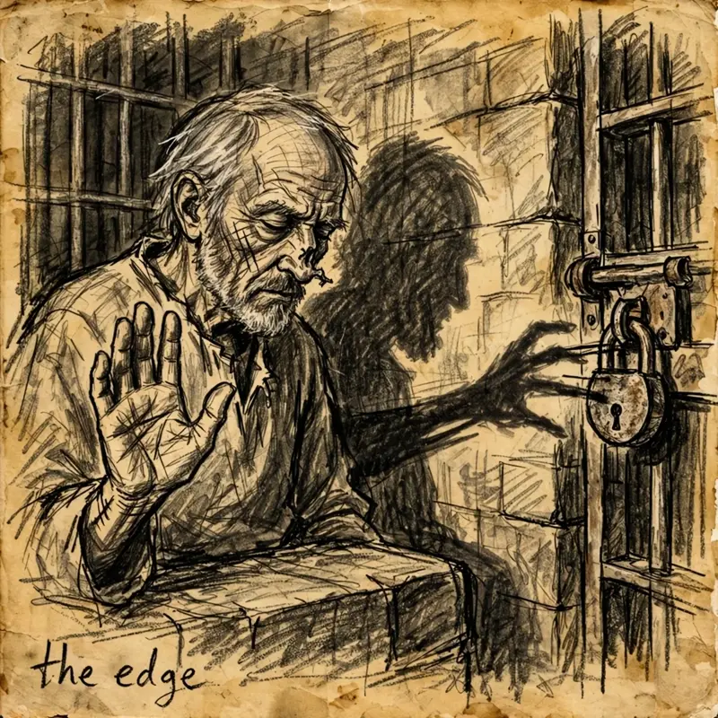
I made the air bend tonight.
I closed my eyes, and rehearsed my old mentor's lessons — but this time I pulled from a different, deeper source. And the air answered. It thickened between my fingers, tightened. Not like wind. Like a muscle I almost didn't know I had. And my hands haven't stopped shaking since.
But how it started... wow, what a bloody mess. Everything I did today, I did wrong.
First, the disguise I put on Yrden before we boarded — gods, what was I thinking. Paint and grease and a prayer to Procan, basically. Anyone with half an eye would've seen through it. Changing a face is about convincing the world to see something different. That's what the shadows can do, when we shape them. I just couldn't do it yet.
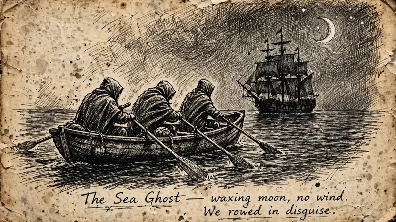
Then, boarding the Sea Ghost. I hid in a barrel and we went straight for the ship like idiots. Things turned bad, quickly, and only got worse after that. I barely remember the mad shouting, that bloody storm throwing me into the water, and a harpoon ripping through me. I went down fast. While everyone else kept fighting, I was on the deck bleeding out. And in the darkness, I dreamt.
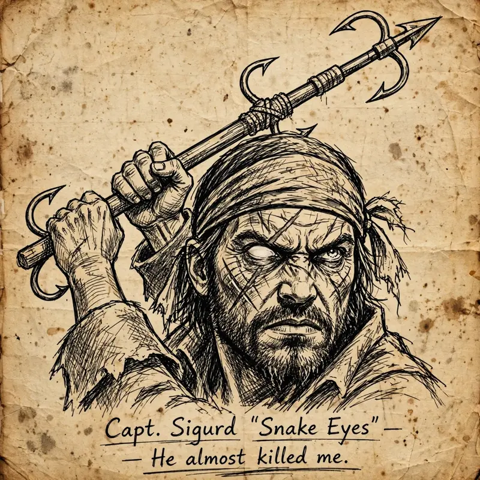
I was back in the river, sinking, feeling Caspian's fingers slip through mine, the cold burning through bone, my heart being torn apart. I've been running from that moment ever since, but somehow I was there again, this time drowning in my own blood, about to lose everything again. I was ready to let go... but at the crack of thunder, under the waxing moon, I heard Gideon's ghostly voice. Giving me strength, pushing me to understand what I was and what I must become.
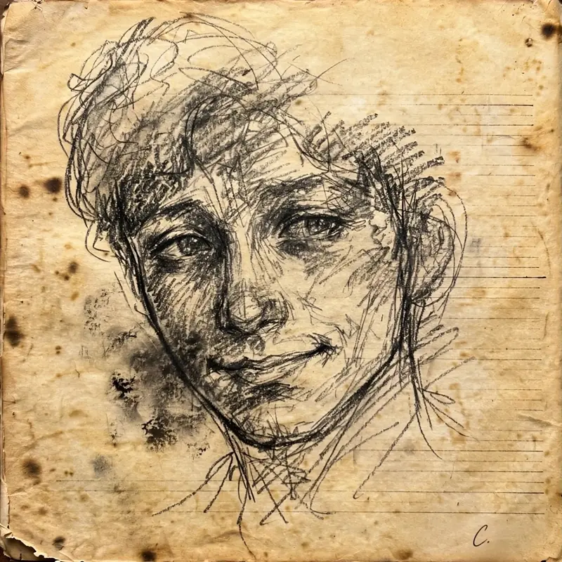
Gideon, my old friend and mentor. Back in prison, in the damp darkness, he had been preparing me for this moment. Five years of watch the coin, boy, not my hands — I thought he was showing me cheap tricks to keep a kid from going mad in a cell. That old bastard was building something in me the whole time and never said a word.
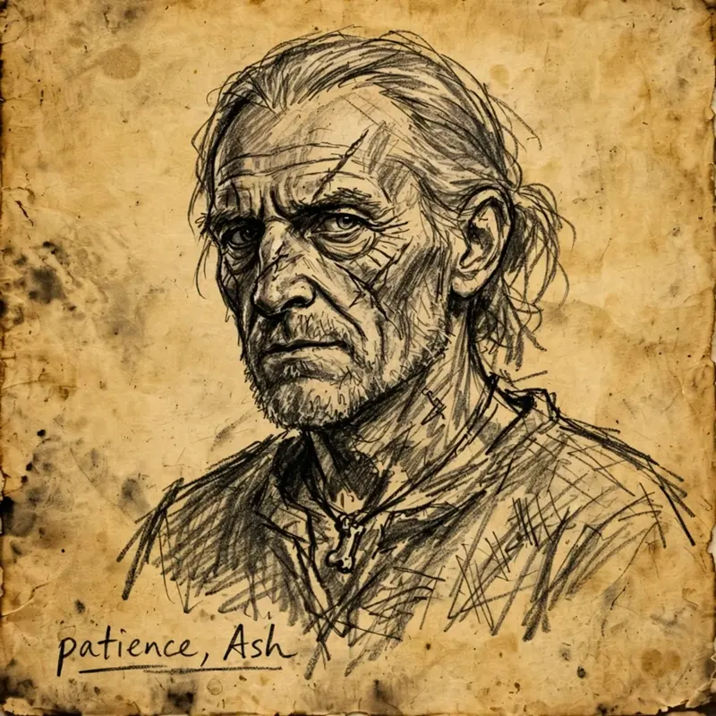
I thought I had forgotten all about it. But lately I've seen new wonders happen around me: Semoussa filling the air with light, Obscura extending a ghostly hand across a room as she whispers mysterious words, all while I stood behind them with a crossbow, holding my breath, thinking that a petty thief was all I'd ever be. But each time, every whispered word, I listened. Every gesture, I watched, carefully. Silently, it chipped away at something inside me.
But my dreams had to wait. It was Mikal who brought me back up, and I was on the ship's deck again. My friends had won the battle, but the job wasn't done yet.
Below deck we found a prisoner chained in the dark. When we opened that door and saw him, I froze — that face... were those Caspian's eyes looking into mine again? Ah, no. The shadows were playing their tricks on me. "My name is Oceanus", he said with a deep, smooth voice. A sea elf captured by the smugglers. We freed him and I gave him back his weapons. He looked at me with gratitude, and as he put a hand on my shoulder I felt something else. Strength and sweetness; an earnest smile, even after all he'd endured.
Caspian was like that.
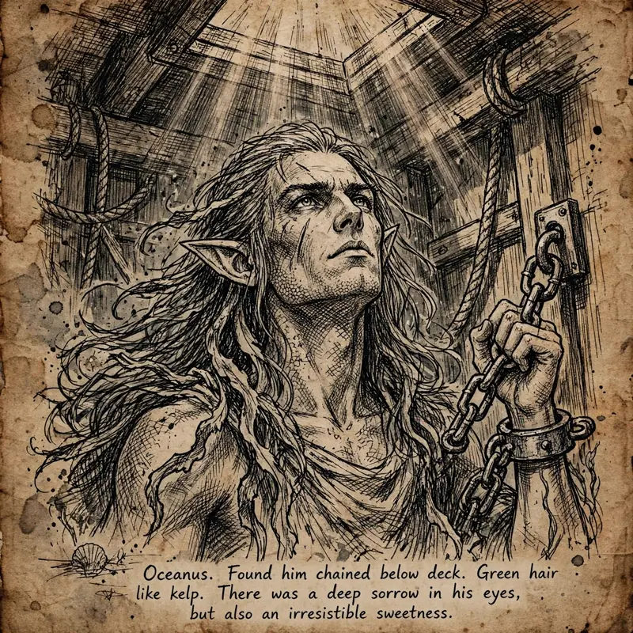
I would have said more. But then we found something more disturbing. A box with an odd pearl inside it. Heavier than it should be, with a foul rotting smell. It swallows light like a drain in the water, and hums strangely when Yrden gets close. It has to mean something, and I'm afraid we'll find out soon. And I won't like it when we do.
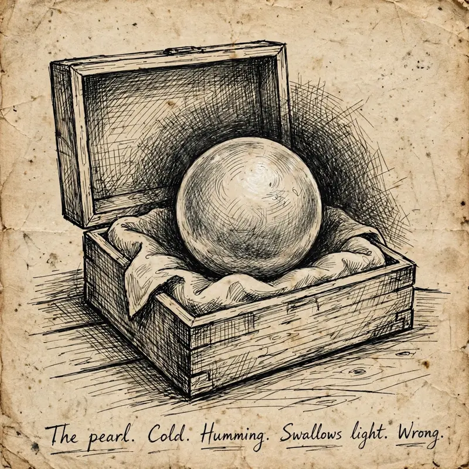
As we sailed back to port I stayed away from the others. I was staring into the sea when a small dark tern perched on the ship's figurehead. I tossed it some fish, which it gulped down eagerly. It then stared at me with its deep black eyes, and uttered a sharp little kik. I've heard it before. Could it be the same bird, drifting through Saltmarsh but always, somehow, following me? Like a shadow... or perhaps a friend.
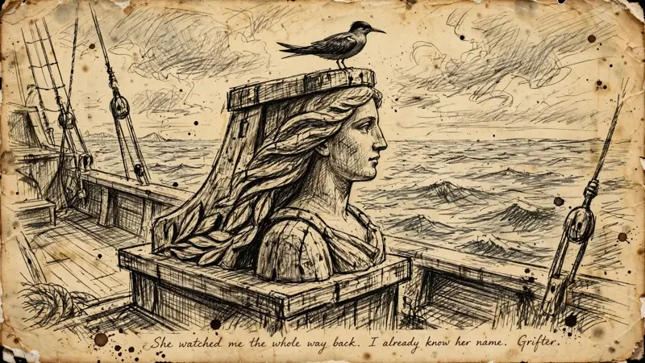
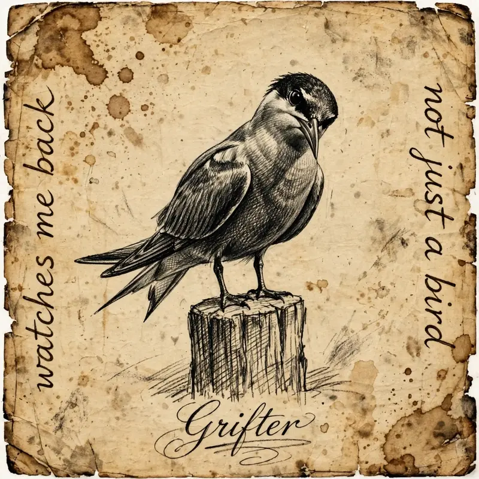
But I had other matters to attend to. I locked myself in the captain's room, and took out this journal. But what was I going to write? Went to sea. Got stabbed. Took a nap while my friends did the work. So I put it back in the pack, and took Sanbalet's spellbook instead.
The ink moves when I touch it — the first time I opened it, weeks ago, I thought I was losing my mind. But I can't help coming back to it. Its runes keep shifting, rearranging into shapes that feel the way a lock feels when the pins line up. Every night, alone under the candle light, I've been studying those pages, hoping to unlock a little more.
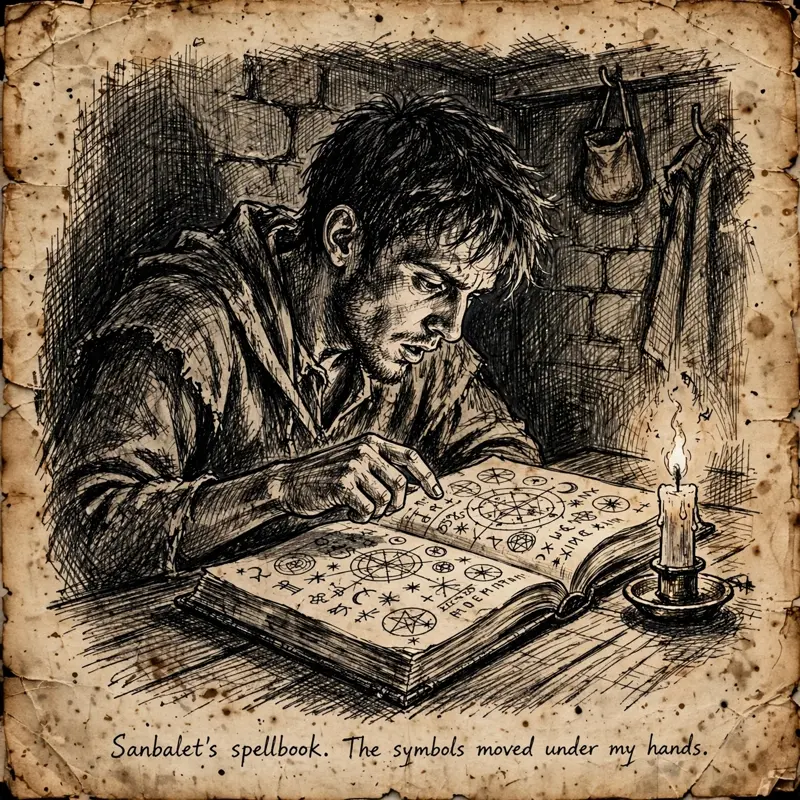
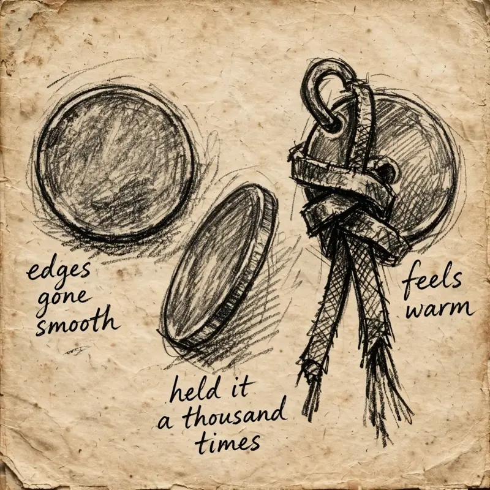
As I stared at its symbols again, I could hear the echo of Gideon's cold voice whispering "reach for the shadow's edge". And somehow, I knew what I had to do. I breathed deeply, closing my eyes. I grasped Gideon's coin on my chest and extended my hand. I reached. I whispered. I felt the air thicken and bend between my fingers. Then I opened my eyes to see, finally, the shadows submitting to my will.
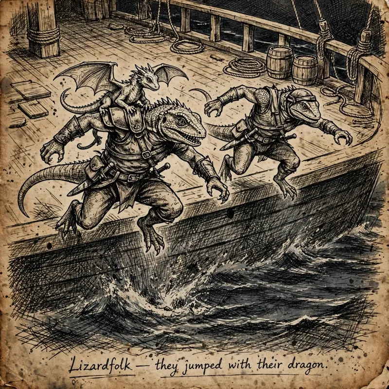
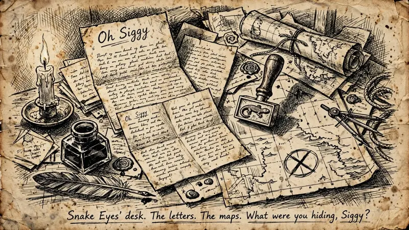
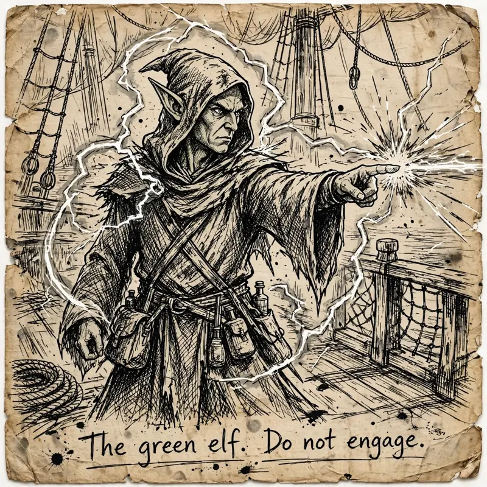